अध्याय 15: भारतीय राजनीति: नए बदलाव
(Recent Developments in Indian Politics) - NCERT Master Notes
1. 1989 के बाद भारतीय राजनीति और कांग्रेस प्रणाली का अंत
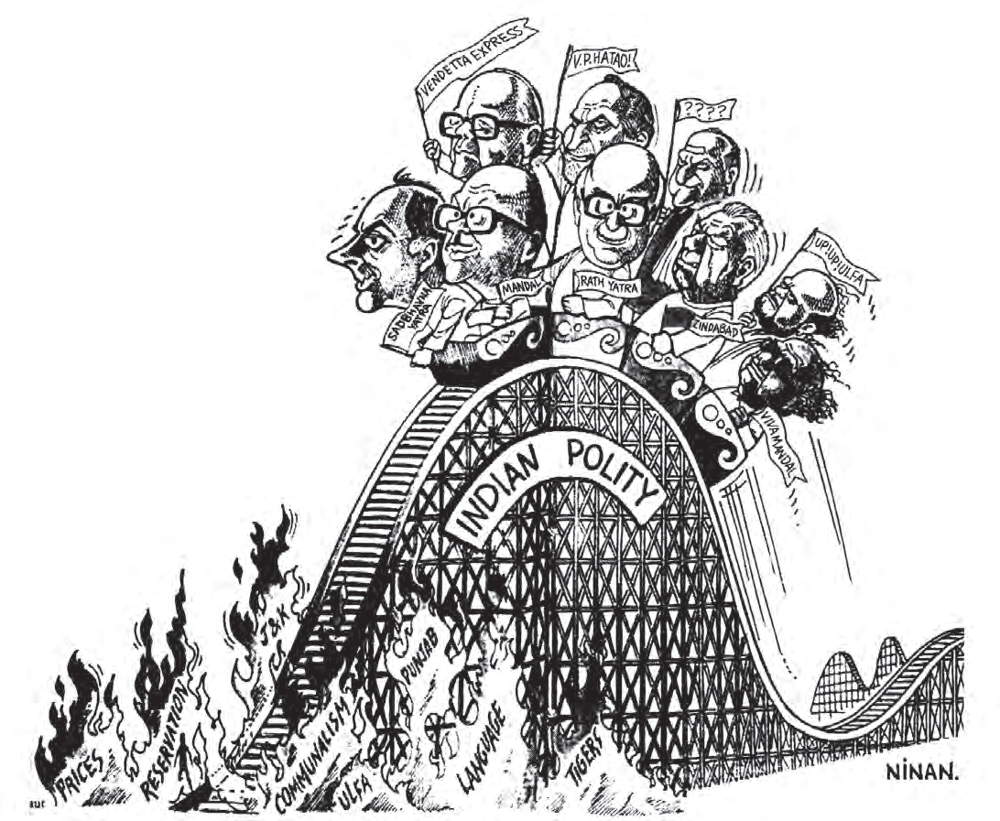
प्रिय विद्यार्थियों, 1980 के दशक के अंतिम वर्षों में भारत ने कई बड़े राजनीतिक, आर्थिक और सामाजिक बदलाव देखे। 1989 का चुनाव भारतीय राजनीति में एक ऐतिहासिक विभाजक रेखा (Watershed moment) है।
कांग्रेस प्रणाली का अंत (End of Congress System): 1984 में इंदिरा गांधी की हत्या के बाद हुए चुनावों में कांग्रेस ने रिकॉर्ड 415 सीटें जीती थीं। लेकिन 1989 के आम चुनावों में कांग्रेस केवल 197 सीटें हासिल कर पाई। हालांकि वह अभी भी सबसे बड़ी पार्टी थी, लेकिन बहुमत न होने के कारण उसने विपक्ष में बैठने का फैसला किया। इसके साथ ही आज़ादी के बाद से चली आ रही 'कांग्रेस प्रभुत्व की प्रणाली' का अंत हो गया।
गठबंधन राजनीति का उदय (Era of Coalitions):
- 1989 के बाद केंद्र में **'बहु-दलीय व्यवस्था'** (Multi-party system) का वास्तविक युग शुरू हुआ। अब किसी एक दल को पूर्ण बहुमत मिलना कठिन हो गया और क्षेत्रीय दल सरकार बनाने में 'किंगमेकर' बन गए।
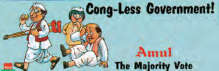
- राष्ट्रीय मोर्चा (National Front) सरकार: 1989 में जनता दल और कुछ क्षेत्रीय दलों ने मिलकर राष्ट्रीय मोर्चा बनाया और **वी. पी. सिंह** प्रधानमंत्री बने। इस सरकार को **भारतीय जनता पार्टी (BJP)** और **वामपंथियों (Left)** ने बाहर से बिना सरकार में शामिल हुए समर्थन दिया।
विश्वनाथ प्रताप सिंह (वी. पी. सिंह) (1931-2008)
जीवन परिचय व योगदान: भारत के आठवें प्रधानमंत्री (1989-1990) जिन्होंने राष्ट्रीय मोर्चा (National Front) गठबंधन सरकार का नेतृत्व किया। उन्होंने मंडल आयोग की सिफारिशों को लागू कर सरकारी नौकरियों में अन्य पिछड़े वर्गों (OBC) को 27% आरक्षण देने का ऐतिहासिक निर्णय लिया, जिसने देश की सामाजिक-राजनीतिक दिशा बदल दी।
भाग 2: मंडल आयोग और पिछड़ों की राजनीति (Mandal Issue)
1990 के दशक में भारतीय समाज और राजनीति को गहरे रूप से प्रभावित करने वाला सबसे बड़ा मुद्दा **'मंडल आयोग की सिफारिशों'** को लागू करना था। इसे 'मंडल मुद्दा' कहा जाता है।
1. पृष्ठभूमि और आरक्षण का निर्णय
1978 में मोरारजी देसाई की जनता पार्टी सरकार ने **बिंदेश्वरी प्रसाद मंडल (B.P. Mandal)** की अध्यक्षता में 'दूसरा पिछड़ा वर्ग आयोग' (Second Backward Classes Commission) नियुक्त किया था।
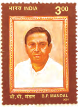
बिंदेश्वरी प्रसाद मंडल (B. P. Mandal) (1918-1982)
जीवन परिचय व योगदान: बिहार के प्रमुख समाजवादी नेता और सांसद। वे 1968 में बिहार के मुख्यमंत्री भी रहे। उन्होंने द्वितीय पिछड़ा वर्ग आयोग (मंडल आयोग) की अध्यक्षता की, जिसने अन्य पिछड़े वर्गों (OBC) को 27% आरक्षण देने की सिफारिश की। यह सिफारिश 1990 में लागू की गई, जिसने भारतीय राजनीति को बदल दिया।
- मंडल आयोग की सिफारिशें: आयोग ने 1980 में अपनी रिपोर्ट सौंपी और सिफारिश की कि अनुसूचित जातियों (SC) और जनजातियों (ST) के अलावा समाज में एक बड़ा वर्ग **'अन्य पिछड़ा वर्ग' (OBC)** है, जो शैक्षणिक और सामाजिक रूप से पिछड़ा है। इन्हें केंद्र सरकार की नौकरियों और शिक्षण संस्थाओं में **27% आरक्षण** मिलना चाहिए।
- सिफारिशों को लागू करना (August 1990): राष्ट्रीय मोर्चा सरकार के प्रधानमंत्री वी. पी. सिंह ने संसद में इस सिफारिश को लागू करने की घोषणा की। इस घोषणा के बाद देश में विशेषकर उत्तर भारत में बड़े पैमाने पर हिंसक छात्र आंदोलन और विरोध प्रदर्शन हुए। इसे **'एंटी-मंडल आंदोलन'** कहा गया।
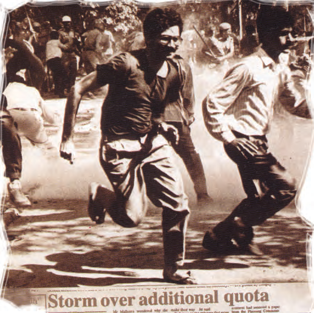
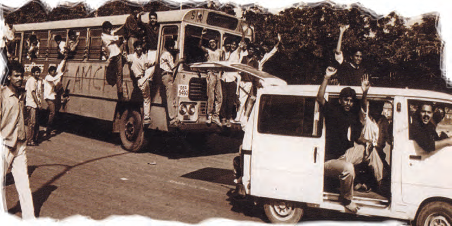
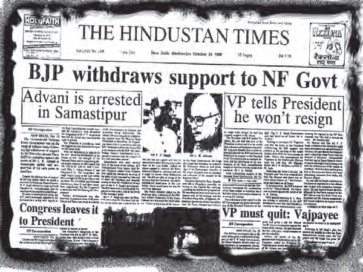
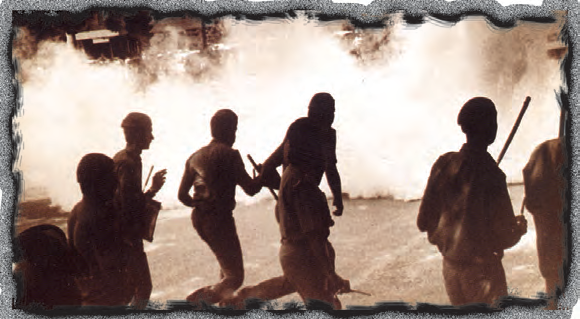
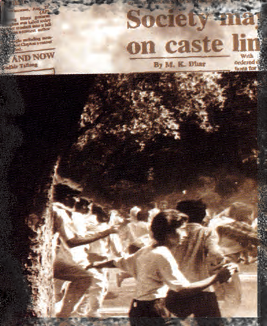
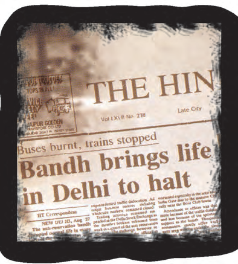
चित्र गैलरी की व्याख्या: यह समाचार पत्रों की विभिन्न कतरनें आरक्षण विरोधी आंदोलन की व्यापकता और समाज में इसके लेकर तीव्र प्रतिक्रिया को दर्शाती हैं। "Storm over additional quota" और हिंसक झड़पों के शीर्षकों से यह साफ़ पता चलता है कि उस समय आरक्षण एक अत्यंत संवेदनशील मुद्दा बन चुका था।
- इन्दिरा साहनी मामला (1992): सर्वोच्च न्यायालय ने इस निर्णय को चुनौती देने वाली याचिकाओं पर सुनवाई करते हुए सरकार के फैसले को संवैधानिक रूप से सही माना, लेकिन यह शर्त जोड़ी कि पिछड़े वर्गों के संपन्न लोगों (क्रीमी लेयर) को आरक्षण का लाभ नहीं मिलेगा।
2. दलित चेतना का उदय और बहुजन समाज पार्टी
1980 के दशक में ही शोषित और वंचित जातियों के बीच एक मजबूत राजनीतिक चेतना का प्रसार हुआ।
- बामसेफ (BAMCEF - 1978): 'बैकवर्ड एंड माइनॉरिटी कम्युनिटीज एम्प्लॉइज फेडरेशन' का गठन हुआ, जिसने सरकारी कर्मचारियों के बीच सामाजिक न्याय की भावना को मजबूत किया।
- बहुजन समाज पार्टी (BSP) का गठन (1984): **कांशीराम** के कुशल नेतृत्व में बसपा का गठन हुआ। इस पार्टी ने दलितों, पिछड़ों और अल्पसंख्यकों (जिन्हें कांशीराम ने 'बहुजन' कहा) के अधिकारों की बात की। बसपा ने उत्तर प्रदेश में कई बार गठबंधन सरकारें बनाईं, जिससे दलितों में गहरा राजनीतिक आत्मविश्वास जगा।
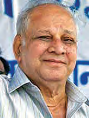
कांशीराम (Kanshi Ram) (1934-2006)
जीवन परिचय व योगदान: बहुजन समाज के अधिकारों के लिए संघर्ष करने वाले प्रमुख राजनेता और विचारक। उन्होंने 'बामसेफ' (BAMCEF), DS4 और अंततः 'बहुजन समाज पार्टी' (BSP) की स्थापना की। उन्होंने दलितों, पिछड़ों और अल्पसंख्यकों (बहुजन) को संगठित कर भारतीय राजनीति में दलित सशक्तीकरण की एक नई लहर पैदा की।
भाग 3: नई आर्थिक नीति - 1991 (New Economic Policy)
1991 में भारत को एक बड़े विदेशी मुद्रा संकट (Foreign Exchange Crisis) और भुगतान संतुलन के संकट का सामना करना पड़ा। देश के पास केवल दो हफ़्ते के आयात का पैसा बचा था।
1. एलपीजी (LPG) मॉडल की शुरुआत
इस संकट से उबरने के लिए प्रधानमंत्री **पी. वी. नरसिम्हा राव** और वित्त मंत्री **डॉ. मनमोहन सिंह** ने मिलकर भारतीय अर्थव्यवस्था को वैश्विक पटल पर खोल दिया। इसे **नई आर्थिक नीति (NEP)** कहा गया:
- उदारीकरण (Liberalization - L): उद्योगों को लाइसेंस राज और कड़े सरकारी प्रतिबंधों से छूट दी गई।
- निजीकरण (Privatization - P): सरकारी उपक्रमों में निजी भागीदारी और विदेशी निवेश को बढ़ावा दिया गया।
- वैश्वीकरण (Globalization - G): आयात शुल्क घटाकर भारतीय अर्थव्यवस्था को विश्व बाजार से जोड़ा गया।
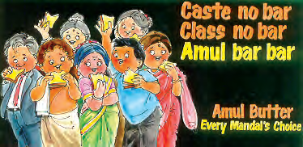
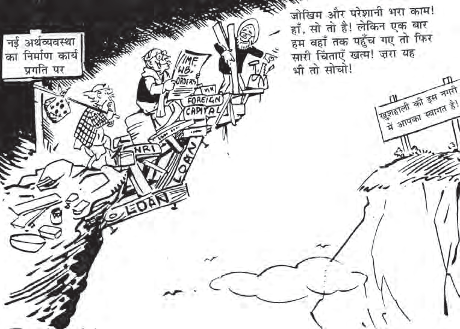
पामुलापति वेंकट नरसिम्हा राव (1921-2004)
जीवन परिचय व योगदान: भारत के नववें प्रधानमंत्री (1991-1996) जिन्होंने राजीव गांधी की हत्या के बाद देश का नेतृत्व किया। उनके कार्यकाल में वित्त मंत्री डॉ. मनमोहन सिंह के साथ मिलकर ऐतिहासिक 'नई आर्थिक नीति' (LPG - उदारीकरण, निजीकरण, वैश्वीकरण) की शुरुआत की गई, जिसने भारतीय अर्थव्यवस्था का चेहरा बदल दिया।
भाग 4: अयोध्या विवाद और हिंदुत्व की राजनीति (Ayodhya Issue)
1980 के दशक के उत्तरार्ध में भारत में धर्मनिरपेक्षता (Secularism) और सांप्रदायिक सौहार्द को लेकर एक नया राजनैतिक विवाद खड़ा हुआ, जिसे **'अयोध्या विवाद'** या राम जन्मभूमि-बाबरी मस्जिद विवाद कहा जाता है।
1. हिंदुत्व की विचारधारा और रथ यात्रा
भारतीय जनता पार्टी (BJP) ने इस दौर में सावरकर के विचारों पर आधारित **'हिंदुत्व'** या हिंदू राष्ट्रवाद को अपनी मुख्य राजनैतिक पहचान बनाया।
- शाह बानो मामला (1985): सुप्रीम कोर्ट द्वारा एक तलाकशुदा मुस्लिम महिला (शाह बानो) को गुजारा भत्ता देने के आदेश को जब राजीव गांधी सरकार ने रूढ़िवादी मुस्लिमों के दबाव में आकर संसद से कानून बनाकर पलट दिया, तो भाजपा ने सरकार पर 'अल्पसंख्यक तुष्टीकरण' का आरोप लगाया।
- ताला खोलना (1986): फैजाबाद जिला अदालत के आदेश पर जब बाबरी मस्जिद के बंद ताले को हिंदू श्रद्धालुओं की पूजा के लिए खोल दिया गया, तो दोनों समुदायों के बीच तनाव चरम पर पहुँच गया।
- रथ यात्रा (1990): भाजपा के वरिष्ठ नेता लालकृष्ण आडवाणी ने गुजरात के सोमनाथ से उत्तर प्रदेश के अयोध्या तक एक विशाल **'राम रथ यात्रा'** का नेतृत्व किया, जिससे इस आंदोलन को देशव्यापी जनसमर्थन मिला।
2. 6 दिसंबर 1992 का विध्वंस और सर्वोच्च न्यायालय का निर्णय
6 दिसंबर 1992 को देश भर से आए लाखों 'कारसेवकों' ने विवादित ढांचे को गिरा दिया।
- हिंसा और दंगे: इस विध्वंस के बाद पूरे देश में भीषण सांप्रदायिक दंगे भड़क उठे (जैसे मुंबई के दंगे)। केंद्र की नरसिम्हा राव सरकार ने उत्तर प्रदेश की कल्याण सिंह (BJP) सरकार को बर्खास्त कर दिया।
- राजनैतिक ध्रुवीकरण: इस मुद्दे ने देश में धर्मनिरपेक्षता और राष्ट्रवाद की बहसों को और तीव्र कर दिया।
- सर्वोच्च न्यायालय का निर्णय (नवंबर 2019): लगभग तीन दशकों की लंबी कानूनी लड़ाई के बाद, भारत के सुप्रीम कोर्ट की पाँच न्यायाधीशों की संवैधानिक पीठ ने सर्वसम्मति से निर्णय देते हुए विवादित स्थल पर राम मंदिर निर्माण का मार्ग प्रशस्त किया और मुस्लिम पक्ष को मस्जिद निर्माण के लिए अलग स्थान पर 5 एकड़ जमीन आवंटित करने का आदेश दिया।
भाग 5: राजीव गांधी की हत्या और गठबंधन का दौर (Coalitions - 1991-2014)
मई 1991 में चुनाव प्रचार के दौरान तमिलनाडु के **श्रीपेरंबदूर** में श्रीलंकाई तमिल उग्रवादी संगठन **लिट्टे (LTTE)** द्वारा किए गए आत्मघाती हमले में पूर्व प्रधानमंत्री **राजीव गांधी की हत्या** कर दी गई।
इस हत्याकांड से उपजी सहानुभूति लहर के कारण 1991 के चुनावों में कांग्रेस की वापसी हुई और पी. वी. नरसिम्हा राव देश के प्रधानमंत्री बने। उनके बाद भारत ने गठबंधन सरकारों का एक अस्थिर दौर देखा।
हरदनहल्ली डोड्डेगौड़ा देवेगौड़ा (1933)
जीवन परिचय व योगदान: पानाजी और कर्नाटक के पूर्व मुख्यमंत्री और भारत के ग्यारहवें प्रधानमंत्री (1996-1997)। उन्होंने संयुक्त मोर्चा (United Front) गठबंधन सरकार का नेतृत्व किया, जिसे कांग्रेस और वामपंथी दलों का बाहर से समर्थन प्राप्त था। उन्होंने क्षेत्रीय दलों को राष्ट्रीय स्तर पर एकजुट करने में महत्वपूर्ण भूमिका निभाई।
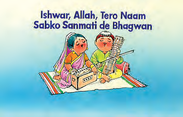

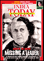
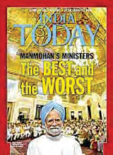
चित्र गैलरी की व्याख्या: यह चित्र 1990 के दशक की गठबंधन राजनीति के उतार-चढ़ाव और अस्थिरता को राष्ट्रीय पत्रिकाओं के कवर्स के ज़रिए दर्शाते हैं। इसमें विभिन्न गठबंधन प्रधानमंत्रियों को केंद्र सरकार चलाने की चुनौतियों से जूझते हुए दिखाया गया है, जो इस युग के राजनीतिक परिदृश्य को बयाँ करते हैं।
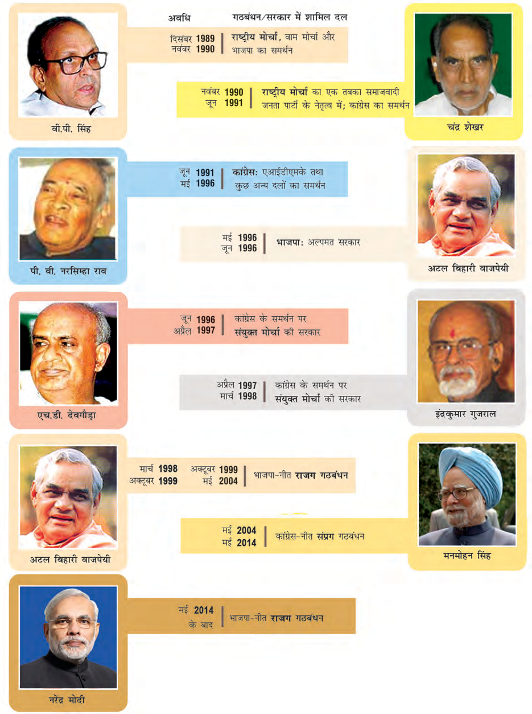
भाग 6: एनडीए (NDA) और यूपीए (UPA) का सफर
1990 के दशक की राजनैतिक अस्थिरता के बाद देश में दो बड़े राजनैतिक धड़ों (Gathbandhans) का उदय हुआ, जिन्होंने बारी-बारी से देश पर शासन किया:
1. राष्ट्रीय जनतांत्रिक गठबंधन (NDA)
भाजपा के नेतृत्व में बने इस गठबंधन (NDA) ने 1998 से 2004 तक देश पर शासन किया। प्रधानमंत्री **अटल बिहारी वाजपेयी** के कुशल नेतृत्व में इस सरकार ने पोखरण-II परमाणु परीक्षण, कारगिल विजय, और बुनियादी ढांचे (स्वर्णिम चतुर्भुज) के विकास के साथ-साथ गठबंधन धर्म का बखूबी पालन किया।
अटल बिहारी वाजपेयी (1924-2018)
जीवन परिचय व योगदान: भारतीय जनता पार्टी के सह-संस्थापक और भारत के तीन बार प्रधानमंत्री बनने वाले महान राजनेता। उनके नेतृत्व में राष्ट्रीय जनतांत्रिक गठबंधन (NDA) की पहली गैर-कांग्रेसी सरकार ने अपना 5 साल का कार्यकाल (1999-2004) पूरा किया। वे एक कुशल वक्ता, कवि और उदारवादी राष्ट्रवादी नेता थे।
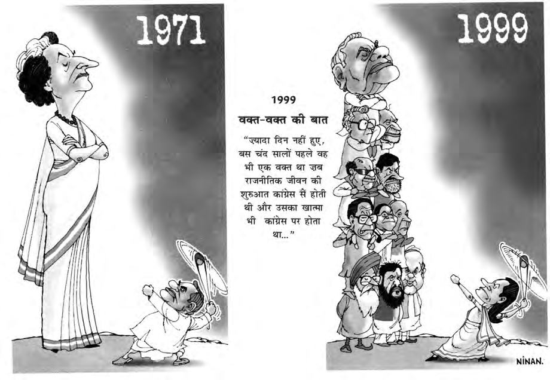
2. संयुक्त प्रगतिशील गठबंधन (UPA)
2004 के आम चुनावों में कांग्रेस के नेतृत्व में बने **'यूपीए' (UPA)** गठबंधन ने सत्ता हासिल की। सोनिया गांधी के अध्यक्षीय नेतृत्व में डॉ. मनमोहन सिंह प्रधानमंत्री बने। इस सरकार ने लगातार 10 वर्ष (2004-2014) तक देश में शासन किया। इस काल में मनरेगा, सूचना का अधिकार (RTI) और शिक्षा का अधिकार (RTE) जैसे जनकल्याणकारी कानून लागू किए गए।

डॉ. मनमोहन सिंह (1932)
जीवन परिचय व योगदान: भारत के प्रसिद्ध अर्थशास्त्री, 1991 के ऐतिहासिक आर्थिक सुधारों के सूत्रधार वित्त मंत्री, और 2004 से 2014 तक देश के प्रधानमंत्री। उनके कार्यकाल (UPA-1 व UPA-2) में आरटीआई (RTI), मनरेगा (MGNREGA) और भारत-अमेरिका परमाणु समझौता जैसे ऐतिहासिक कार्य और जनकल्याणकारी कानून लागू किए गए।
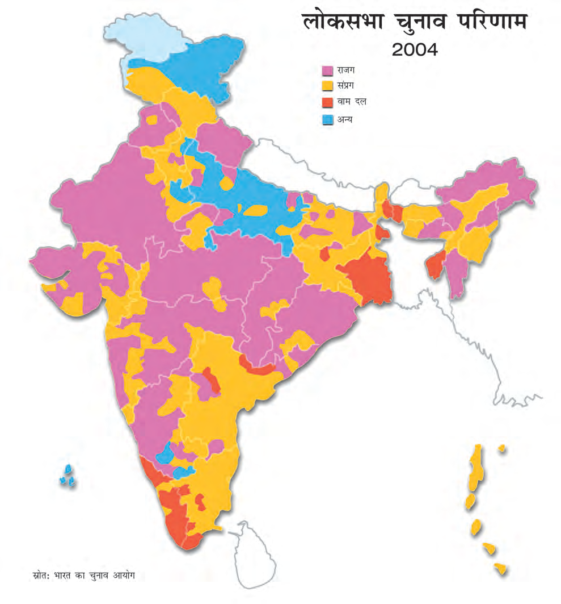
भाग 7: भारतीय राजनीति में उभरती सर्वसम्मति और 2014 के बाद का युग
1990 के दशक के कड़वे अनुभवों और संघर्षों के बावजूद, आज भारतीय राजनीति के मुख्य बुनियादी मुद्दों पर सभी दलों के बीच एक **'मौन सर्वसम्मति' (Consensus)** दिखाई देती है:
- नई आर्थिक नीतियों पर सहमति: अब वामपंथियों को छोड़कर लगभग सभी दल मानते हैं कि देश के विकास के लिए आर्थिक उदारीकरण और निजी क्षेत्र को बढ़ावा देना अनिवार्य है।
- पिछड़े वर्गों (OBC) के आरक्षण की स्वीकार्यता: आज देश का कोई भी दल ओबीसी वर्ग को 27% आरक्षण देने का विरोध नहीं करता।
- राज्यों और क्षेत्रीय दलों की स्वायत्तता की स्वीकार्यता: राष्ट्रीय दल मान चुके हैं कि देश को केवल दिल्ली से नहीं चलाया जा सकता, राज्यों का सहयोग और गठबंधन धर्म आज की राजनीति का सत्य है।
- व्यावहारिक राजनीति (Pragmatism): अब राजनीति विचारधारा (Ideology) की जगह विकास और कूटनीतिक समझौतों पर आधारित हो रही है।
2014 और 'एक-पार्टी बहुमत' की वापसी
लगभग 30 वर्षों के गठबंधन युग के बाद, 2014 में अचानक एक नया बदलाव आया जब प्रधानमंत्री **नरेन्द्र मोदी** के नेतृत्व में भाजपा ने 282 सीटें जीतकर अपने दम पर बहुमत हासिल किया। इसके साथ ही एक नया राजनैतिक युग शुरू हुआ जिसे **'भाजपा प्रभुत्व की प्रणाली'** भी कहा जा सकता है। 2019 में भाजपा ने और बड़ी जीत (303 सीटें) हासिल की। यद्यपि भाजपा को पूर्ण बहुमत प्राप्त हुआ, लेकिन उसने गठबंधन धर्म का सम्मान करते हुए अपनी राष्ट्रीय जनतांत्रिक गठबंधन (NDA) सरकार को बनाए रखा।
भाग 8: मेगा प्रश्न बैंक (Board Exam Special Q&A)
अति-लघु उत्तरीय प्रश्न (1 अंक)
- प्रश्न: भारतीय राजनीति में 'गठबंधन युग' की शुरुआत किस वर्ष के आम चुनावों से मानी जाती है?
उत्तर: 1989 के लोकसभा चुनावों से। - प्रश्न: मंडल आयोग की स्थापना किस वर्ष और किस प्रधानमंत्री के शासनकाल में हुई थी?
उत्तर: 1978 में, प्रधानमंत्री मोरारजी देसाई के शासनकाल में। - प्रश्न: 'बामसेफ' (BAMCEF) का पूरा नाम क्या है?
उत्तर: 'बैकवर्ड एंड माइनॉरिटी कम्युनिटीज एम्प्लॉइज फेडरेशन'। - प्रश्न: 1991 के आर्थिक सुधारों के समय भारत के प्रधानमंत्री कौन थे?
उत्तर: पी. वी. नरसिम्हा राव। - प्रश्न: 'इन्दिरा साहनी बनाम भारत संघ' मामला (1992) किससे संबंधित था?
उत्तर: अन्य पिछड़े वर्गों (OBC) के लिए 27% आरक्षण की वैधता से।
लघु उत्तरीय प्रश्न (4 अंक)
- प्रश्न: 1991 की 'नई आर्थिक नीति' (NEP) के तीन प्रमुख आधार क्या थे?
उत्तर:
1. **उदारीकरण (Liberalization):** उद्योगों को लाइसेंस राज और कड़े सरकारी प्रतिबंधों से छूट दी गई।
2. **निजीकरण (Privatization):** सरकारी उपक्रमों में निजी भागीदारी और विदेशी निवेश को बढ़ावा दिया गया।
3. **वैश्वीकरण (Globalization):** आयात शुल्क घटाकर भारतीय अर्थव्यवस्था को विश्व बाजार से जोड़ा गया। - प्रश्न: बाबरी मस्जिद विध्वंस (6 दिसंबर 1992) के क्या गंभीर राजनैतिक परिणाम हुए?
उत्तर:
1. पूरे देश में भीषण सांप्रदायिक दंगे भड़क उठे, जिससे जान-माल का भारी नुकसान हुआ।
2. केंद्र सरकार ने उत्तर प्रदेश की भाजपा समर्थित कल्याण सिंह सरकार को बर्खास्त कर दिया।
3. भाजपा शासित अन्य राज्यों (मध्य प्रदेश, राजस्थान, हिमाचल प्रदेश) की सरकारों को भी बर्खास्त कर राष्ट्रपति शासन लागू किया गया।
4. देश में धर्मनिरपेक्षता पर बहस तेज़ हो गई और राजनैतिक ध्रुवीकरण बढ़ गया।
दीर्घ उत्तरीय प्रश्न (6 अंक)
- प्रश्न: 1989 के बाद भारतीय राजनीति को आकार देने वाले 'पाँच मुख्य मुद्दों' (डेवलपमेंट्स) की विस्तृत व्याख्या कीजिए।
उत्तर: 1989 के बाद भारतीय राजनीति में पांच बड़े बदलाव आए जिन्होंने राजनीति की दिशा बदल दी:
1. कांग्रेस प्रणाली का पतन: 1989 के चुनावों के बाद कांग्रेस प्रभुत्व का अंत हो गया और गठबंधन सरकार का दौर शुरू हुआ।
2. मंडल का मुद्दा (OBC आरक्षण): वी.पी. सिंह सरकार द्वारा मंडल आयोग की सिफारिशें लागू करने के निर्णय से देश में तीव्र सामाजिक-राजनैतिक आंदोलन और विरोध प्रदर्शन हुए।
3. नई आर्थिक नीति (1991): गंभीर आर्थिक संकट के बाद भारत ने एलपीजी मॉडल अपनाया, जिससे आर्थिक विकास की नई दिशा तय हुई।
4. अयोध्या विवाद और हिंदुत्व का उदय: राम जन्मभूमि आंदोलन और बाबरी मस्जिद विध्वंस (1992) ने देश की राजनीति में सांप्रदायिक और धर्मनिरपेक्ष बहसों को तीव्र कर दिया।
5. राजीव गांधी की हत्या (1991): लिट्टे द्वारा की गई इस हत्या ने कांग्रेस के नेतृत्व में शून्यता पैदा की और गठबंधन युग को अधिक बढ़ावा दिया।
अध्याय 15 का 'गुरुमंत्र' (Master Revision Summary)
- 1. 1989 के चुनाव ने कांग्रेस के एकाधिकार का अंत कर बहु-दलीय गठबंधन के दौर (NDA/UPA) की शुरुआत की।
- 2. मंडल आयोग (B.P. Mandal) ने पिछड़ों (OBC) को 27% आरक्षण देकर सामाजिक न्याय की शुरुआत की।
- 3. कांशीराम ने बामसेफ और बसपा की स्थापना कर बहुजन समाज के राजनीतिक सशक्तीकरण का सूत्रपात किया।
- 4. 1991 में नरसिम्हा राव और डॉ. मनमोहन सिंह ने देश की अर्थव्यवस्था का स्वरूप बदल दिया (LPG Model)।
- 5. अयोध्या विवाद (6 दिसंबर 1992 विध्वंस) और 2019 के सुप्रीम कोर्ट के फैसले ने आस्था व न्याय के संतुलन का नया अध्याय लिखा।
- 6. 2014 में नरेन्द्र मोदी के नेतृत्व में भाजपा ने 30 साल बाद पहली बार 'पूर्ण बहुमत' की सरकार बनाकर नया इतिहास रचा।
🗳️ मतदान प्रक्रिया: वोट कैसे डालें? (How to Cast a Vote)
स्वतंत्र और निष्पक्ष चुनाव (Free and Fair Elections) हमारे लोकतंत्र की सबसे बड़ी ताकत हैं। भारत का प्रत्येक नागरिक जो 18 वर्ष या उससे अधिक आयु का है, उसे मतदान का अधिकार प्राप्त है। मतदान केंद्रों पर यह प्रक्रिया किस प्रकार संपन्न होती है, इसे पुस्तक में दिए गए निम्नलिखित चार्ट के माध्यम से समझाया गया है:
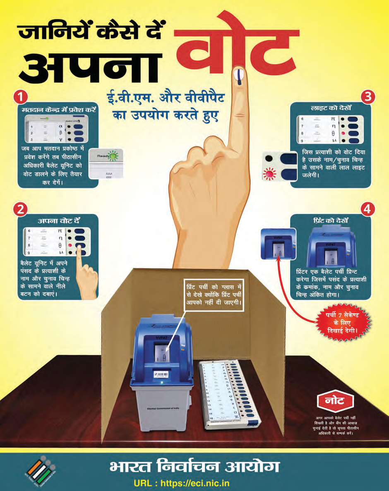
1. **प्रथम मतदान अधिकारी:** मतदाता सूची में नाम और पहचान पत्र (Voter ID) की जाँच करता है।
2. **द्वितीय मतदान अधिकारी:** मतदाता की बाएँ हाथ की तर्जनी उंगली पर **अमिट स्याही (Indelible Ink)** लगाता है, हस्ताक्षर लेता है और एक पर्ची जारी करता है।
3. **तृतीय मतदान अधिकारी:** पर्ची लेकर मतदाता को वोट डालने के लिए वोटिंग कम्पार्टमेंट (Voting Compartment) की ओर जाने की अनुमति देता है।
4. **EVM / VVPAT:** मतदाता वोटिंग मशीन (EVM) पर अपनी पसंद के उम्मीदवार के सामने का **नीला बटन दबाकर** वोट डालता है। वीवीपीएटी (VVPAT) मशीन की खिड़की में 7 सेकंड तक उस पर्ची को देखा जा सकता है जिसपर उम्मीदवार का नाम और चुनाव चिह्न अंकित होता है, जिससे वोट की पुष्टि होती है।